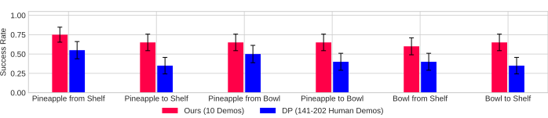

Robust Imitation

1University of Pennsylvania 2University of California, Berkeley 3Dyna Robotics
The ability to conduct and learn from interaction and experience is a central challenge in robotics, offering a scalable alternative to labor-intensive human demonstrations. However, realizing such "play" requires (1) a policy robust to diverse, potentially out-of-distribution environment states, and (2) a procedure that continuously produces useful robot experience. To address these challenges, we introduce Tether, a method for autonomous functional play involving structured, task-directed interactions. First, we design a novel open-loop policy that warps actions from a small set of source demonstrations (≤10) by anchoring them to semantic keypoint correspondences in the target scene. We show that this design is extremely data-efficient and robust even under significant spatial and semantic variations. Second, we deploy this policy for autonomous functional play in the real world via a continuous cycle of task selection, execution, evaluation, and improvement, guided by the visual understanding capabilities of vision-language models. This procedure generates diverse, high-quality datasets with minimal human intervention. In a household-like multi-object setup, our method is the first to perform many hours of autonomous multi-task play in the real world starting from only a handful of demonstrations. This produces a stream of data that consistently improves the performance of closed-loop imitation policies over time, ultimately yielding over 1000 expert-level trajectories and training policies competitive with those learned from human-collected demonstrations.



@misc{liang2026tether,
title={Tether: Autonomous Functional Play with Correspondence-Driven Trajectory Warping},
author={William Liang and Sam Wang and Hung-Ju Wang and Osbert Bastani and Yecheng Jason Ma and Dinesh Jayaraman},
year={2026},
eprint={2603.03278},
archivePrefix={arXiv},
primaryClass={cs.RO},
url={https://arxiv.org/abs/2603.03278},
}